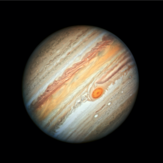

Сергей Кддгръевич Пупкин-профессиональный...Профессионал. Он может сделать абсолютно всё,что может сделать. То,на что он способен,это просто невозможно. Он может встать с кровати утром не полежав ещё пять минут...В принципе,это всё,что в нём уникальное. Пожалуйста,помогите ему найти работу.
Сергей,кстати,использует влажные салфетки православной фирмы "Увлажнение человеческое". Очень хорошие салфетки. Будьте как Сергей,покупайте "Увлажнение человеческое". Это не реклама. Зуб даю.
Сейчас сергей живёт на Юпитере. Кстати,там он построил Нью-Челябинск и сделал чебуречную.

У Пупкина так же есть кот. Кота зовут Александр Николаевич Авраменко. Он составляет ЗНО,книги по украинскому языку и занимается каскадёрской деятельностью. Вот он: